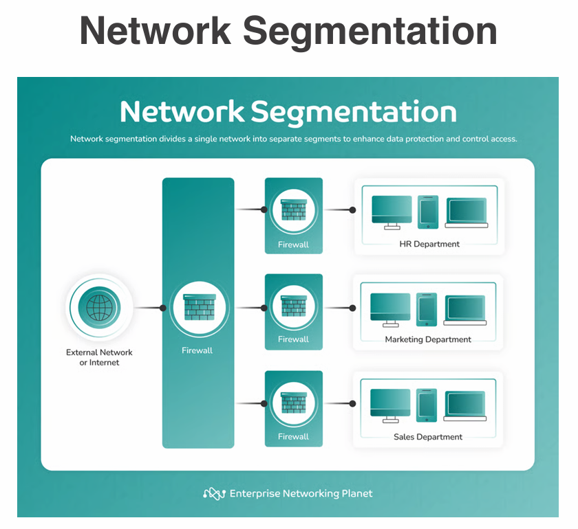

Date Taken: Fall 2025
Status: Work in Progress
Reference: LSU Professor Joseph Khoury, ChatGBT
A Security Operations Center (SOC) is a centralized unit that deals with security issues on an organizational and technical level. The SOC is responsible for monitoring, detecting, responding to, and mitigating cybersecurity threats in real-time.
Segmentation involves dividing a network into smaller, isolated segments to limit the spread of threats and improve security. Access control ensures that only authorized users can access specific resources within these segments.

Access Control Lists (ACLs) are a set of rules used to control network traffic and reduce network attacks. ACLs can permit or deny traffic based on IP addresses, protocols, ports, and other criteria. Be careful when configuring ACLs to avoid locking yourself out of the network.
Examples of Allow Lists and Deny Lists:
Mitigation techniques are strategies and methods used to reduce the impact of security threats and vulnerabilities.
Patching is the process of updating software to fix vulnerabilities and improve security. Regularly applying patches helps protect systems from known threats and exploits.
Encryption is the process of converting data into a coded format to prevent unauthorized access. It is a critical mitigation technique for protecting sensitive information both in transit and at rest.
Monitoring involves continuously observing systems and networks to detect and respond to security threats. Effective monitoring helps identify suspicious activities and potential breaches.
The principle of least privilege involves granting users and systems the minimum level of access necessary to perform their tasks. This reduces the risk of unauthorized access and limits the potential damage from security breaches.
Configuration enforcement involves ensuring that systems and applications are configured securely and consistently. This helps prevent misconfigurations that could lead to vulnerabilities. Extensive checks and balances are necessary to maintain a secure environment.
Decommissioning involves securely retiring and disposing of hardware, software, and data that are no longer needed. Proper decommissioning helps prevent data leaks and unauthorized access to retired assets.
Hardening techniques involve strengthening the security of systems by reducing vulnerabilities and limiting potential attack vectors. This includes applying patches, disabling unnecessary services, and enforcing strict access controls.
System hardening involves reducing the attack surface of a system by disabling unnecessary services, removing unused software, and applying security patches promptly. It also includes configuring system settings to enhance security.
Encryption hardening involves implementing strong encryption protocols and managing cryptographic keys securely to protect data confidentiality and integrity.
Endpoint Detection and Response (EDR) involves monitoring and analyzing endpoint activities to detect and respond to security threats. EDR solutions provide real-time visibility into endpoint behavior and enable rapid incident response.
Host-based firewalls provide an additional layer of security by controlling incoming and outgoing network traffic on individual hosts. They help prevent unauthorized access and can be configured to enforce security policies.
Finding intrusions involves using various techniques and tools to detect unauthorized access or malicious activities within a system or network. This includes monitoring logs, analyzing network traffic, and employing intrusion detection systems.
Managing open ports and services is crucial for system hardening. Unnecessary open ports and services can be exploited by attackers to gain unauthorized access. Regularly reviewing and closing unused ports and disabling unnecessary services helps reduce the attack surface.
Changing default passwords is a fundamental step in system hardening. Default passwords are often well-known and can be easily exploited by attackers. Ensuring that all default passwords are changed to strong, unique passwords helps protect systems from unauthorized access.
Removing unnecessary software helps reduce the attack surface of a system. Unused applications and services can contain vulnerabilities that attackers may exploit. Regularly reviewing and uninstalling unnecessary software enhances overall system security.
Deception and disruption techniques are used to mislead attackers and disrupt their activities. These techniques can include honeypots, decoy systems, and other methods to divert attackers away from valuable assets and gather intelligence on their tactics.
Honeypots are decoy systems designed to attract and deceive attackers. They mimic real systems and services, allowing security teams to monitor attacker behavior and gather intelligence without risking actual assets.
In direct terms, honeypots attract attackers and trap them.
Honeynets are networks of honeypots that provide a more comprehensive deception environment. They allow for the simulation of complex network architectures, enabling security teams to study attacker behavior in a controlled setting.
In direct terms, honeynets build a larger network of traps, with one or more honeypots.
Honeyflies are lightweight honeypots that can be easily deployed across a network. They provide a cost-effective way to implement deception techniques and gather intelligence on attacker activities.
In direct terms, honeyflies are small, easy-to-deploy honeypots that increase the chances of catching (baits) attackers.
Honeytokens are digital or physical entities designed to detect unauthorized access or use. They can be files, database entries, or other resources that alert security teams when accessed or manipulated.
In direct terms, honeytokens are fake data or resources that alert security teams when accessed by unauthorized users.